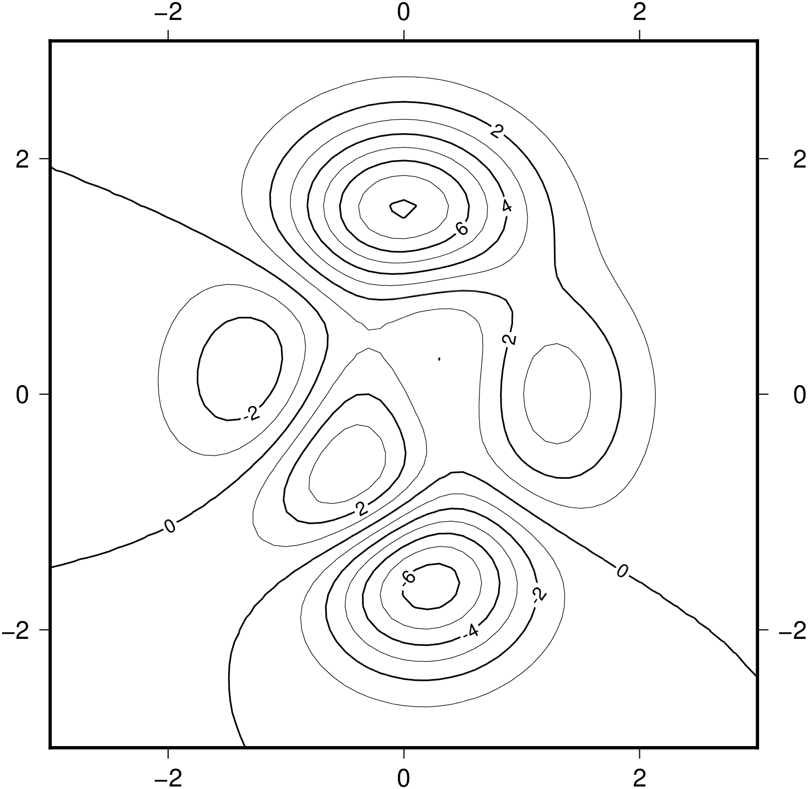
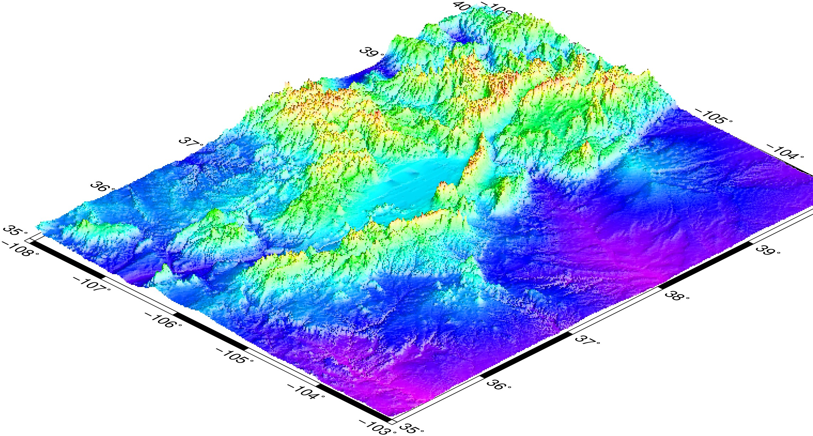
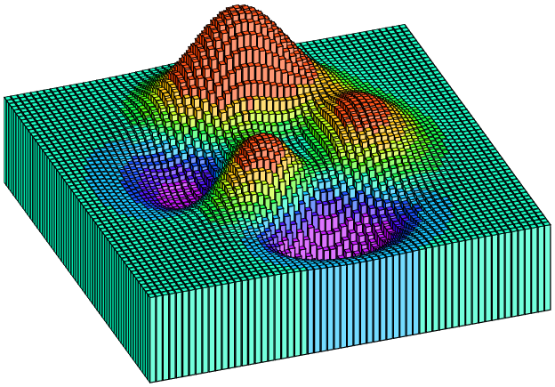

Examples
Here's the "Hello World"
using GMT
plot(collect(1:10),rand(10), lw=1, lc="blue", fmt="png", marker="square",
markeredgecolor=0, size=0.2, markerfacecolor="red", title="Hello World",
x_label="Spoons", y_label="Forks", show=true)<div style="width:300px; height=200px">  </div>
</div>
A few notes about this example. Because we didn't specify the figure size (with the $figsize$ keyword) a default value of 12x8 cm (not counting labels and title) was used. The $fmt="png"$ selected the PNG format. The $show=true$ is needed to show the image at the end.
But now we want an image made up with two layers of data. And we are going to plot on the sphere (the Earth). For that we will need to use the $coast$ program to plot the Earth and append some curvy lines.
And the "Hello Round World"
x = range(0, stop=2pi, length=180); seno = sin.(x/0.2)*45;
- *angle=xx* sets the angle of the vector head apex [default 30]
coast(region=[0 360 -90 90], proj="A300/30/6c", frame="g", resolution="c", land="navy")
plot!(collect(x)*60, seno, lw=0.5, lc="red", fmt="png", marker="circle",
markeredgecolor=0, size=0.05, markerfacecolor="cyan", show=true)In this example region=[0 360 -90 90] means the domain is the whole Earth, frame="g" sets the grid on, resolution="c" selects the crude coast lines resolution and the land="navy" paints the continents with a navy blue color. More complex is the proj="A300/30/6c" argument that selects the map projection, which is a Lambert projection with projection center at 300 degrees East, 0 degrees North. The 6c sets the map width of 6 centimeters.
Note that now the first command, the $coast$, does not have the $show$ keyword. It means we are here creating the first layer but we don't want to see it just yet. The second command uses the ! variation of the $plot$ function, which means that we are appending to a previous plot, and uses the $show=true$ because we are donne with this figure.
Simple contours
Contours are created with $grdcontour$ that takes a grid as input (or a GMTgrid data type). This example shows uses the peaks function to create a classical example. Note, however, that the memory consumption in this example, when creating the plot, is much lower than traditional likewise examples because we will be using only one 2D array intead of 3 3D arrays (ref). In the example cont=1 and annot=2 means draw contours at evry 1 unit of the G grid and annotate at evry other contour line. frame="a" means pick a default automatic annotation and labeling for the axis.
x,y,z=GMT.peaks()
G = gmt("surface -R-3/3/-3/3 -I0.1", [x[:] y[:] z[:]]); # Iterpolate into a regular grid
grdcontour(G, cont=1, annot=2, frame="a", fmt="png", show=1)
Now with colored contours. To make it colored we need to generate a color map and use it. Notetice that we have to specify a pen attribute to get the colored contours because pen specifications are always set separately. Here we will create first a colormap with makecpt that will from -6 to 8 with steps of 1. These values are picked up after the z values of the G grid.
cpt = makecpt(range="-6/8/1"); # Create the color map
grdcontour(G, frame="a", fmt="png", color=cpt, pen="+c", show=1)Color images
Color images are made with $grdimage$ which takes the usual common options and a color map. It operates over grids or images. The next example shows how to create a color appropriate for the grid's z range, plot the image and add a color scale. We use here the $data$ keyword to tell the program to load the grid from a file. The $@$ before the tut_relief.nc file name instructs GMT to download the file from its server on the first usage and save it in a cache dir. See the GMT tuturial for more details about what the arguments mean.
topo = makecpt(color="rainbow", range="1000/5000/500", continuous=true);
grdimage("@tut_relief.nc", shade="+ne0.8+a100", proj="M12c", frame="a", fmt="jpg",
color=topo)
colorbar!(position="jTC+w5i/0.25i+h+o0/-1i", region=[-108 -103 35 40], color=topo,
proj=[], frame="y+lm", fmt="jpg", show=1)Perspective view
We will make a perspective, color-coded view of the US Rockies from the southeast.
topo = makecpt(color="rainbow", range="1000/5000/500", continuous=true);
grdview("@tut_relief.nc", proj="M12c", JZ="1c", shade="+ne0.8+a100", view="135/30",
frame="a", fmt="jpg", color=topo, Q="i100", show=1)
Above we used the Peaks function to create a contour plot. Let us use that grid again and display it this time as 3D bar plot in a perspective view.
cmap = grd2cpt(G); # Compute a colormap with the grid's data range
bar3(G, lw=:thinnest, color=cmap, fmt=:png, show=true)
Warp image in geographical projection
In this example we will load a network image (GDAL will do that for us) and make a creative world map. First command, the imshow, needs to set show=false to no display the image before it is complete. We have to do this because imshow is a one command only shot and so, by default, it has the show keyword hardwire to true.
imshow("http://larryfire.files.wordpress.com/2009/07/untooned_jessicarabbit.jpg",
frame="g", region="d", proj="I15c", image_in="r", show=false)
coast!(shore="1,white", resolution="c", fmt="png", show=true)